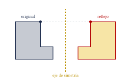
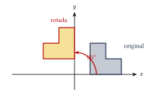
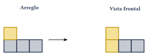
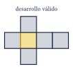
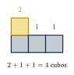

Capítulo 50
Razonamiento espacial
IPN CENEVAL
El razonamiento espacial permite visualizar y transformar figuras en el plano y cuerpos en el espacio.
En este capítulo aprenderás a:
- identificar simetrías;
- aplicar rotaciones, reflexiones y traslaciones;
- interpretar vistas ortogonales;
- reconocer desarrollos planos;
- contar cubos visibles y ocultos;
- completar sucesiones de figuras.
50.1 Transformaciones geométricas#
Una transformación geométrica cambia la posición o la orientación de una figura.
Las transformaciones principales son:
- reflexión;
- rotación;
- traslación.
Estas transformaciones conservan:
- las longitudes;
- los ángulos;
- el área;
- la forma de la figura.
Por ello, la figura original y la transformada son congruentes.
50.2 Simetría axial#
Una figura tiene simetría axial si puede dividirse mediante una recta de modo que una mitad sea el reflejo de la otra.
La recta recibe el nombre de eje de simetría.
En una reflexión, cada punto y su imagen:
- están a la misma distancia del eje;
- se encuentran en lados opuestos;
- forman un segmento perpendicular al eje.

50.2.1 Ejes de simetría#
Algunos ejemplos son:
| Figura | Número de ejes |
|---|---|
| Triángulo escaleno | 0 |
| Triángulo isósceles | 1 |
| Triángulo equilátero | 3 |
| Rectángulo no cuadrado | 2 |
| Rombo no cuadrado | 2 |
| Cuadrado | 4 |
| Circunferencia | Infinitos |
50.3 Simetría central#
Una figura tiene simetría central respecto de un punto \(C\) si una rotación de:
alrededor de \(C\) deja la figura sin cambios.
Si el centro de simetría es el origen, el punto:
se transforma en:
Encuentra el simétrico de:
respecto del origen.
Ver solución
Cambiamos el signo de ambas coordenadas:
Por tanto, el punto simétrico es:
50.4 Rotaciones#
Una rotación gira una figura alrededor de un punto fijo, llamado centro de rotación.
La rotación se determina mediante:
- el centro;
- el ángulo;
- el sentido de giro.
Los sentidos son:
- antihorario: contrario a las manecillas del reloj;
- horario: en el sentido de las manecillas del reloj.
50.4.1 Rotaciones alrededor del origen#
Las reglas principales son:
| Rotación | Transformación |
|---|---|
| \(90^\circ\) antihorario | \((x,y)\longrightarrow(-y,x)\) |
| \(90^\circ\) horario | \((x,y)\longrightarrow(y,-x)\) |
| \(180^\circ\) | \((x,y)\longrightarrow(-x,-y)\) |
| \(270^\circ\) antihorario | \((x,y)\longrightarrow(y,-x)\) |
Rota el punto:
\(90^\circ\) en sentido antihorario alrededor del origen.
Ver solución
Aplicamos:
Entonces:
Por tanto:

50.5 Simetría rotacional#
Una figura tiene simetría rotacional si coincide consigo misma después de un giro menor que:
El orden de la simetría rotacional indica cuántas veces coincide la figura durante una vuelta completa.
Un cuadrado coincide consigo mismo cada:
Por tanto, su orden de simetría rotacional es:
Un triángulo equilátero coincide consigo mismo cada:
Su orden es:
50.6 Traslaciones#
Una traslación desplaza todos los puntos de una figura la misma distancia y en la misma dirección.
La figura no gira ni cambia de tamaño.
Si una traslación desplaza:
unidades horizontalmente y:
unidades verticalmente, entonces:
Traslada el punto:
\(5\) unidades a la derecha y \(4\) unidades hacia abajo.
Ver solución
La transformación es:
Por tanto:
50.7 Comparación de transformaciones#
| Transformación | Desplaza | Gira | Invierte orientación |
|---|---|---|---|
| Traslación | Sí | No | No |
| Rotación | Sí | Sí | No |
| Reflexión | Sí | No | Sí |
Una reflexión invierte la orientación de una figura.
Una rotación y una traslación conservan la orientación.
50.8 Vistas ortogonales#
Las vistas ortogonales son proyecciones planas de un objeto tridimensional.
Las tres vistas principales son:
- vista frontal: muestra ancho y altura;
- vista superior: muestra ancho y profundidad;
- vista lateral: muestra profundidad y altura.
| Vista | Dirección | Dimensiones visibles |
|---|---|---|
| Frontal | Desde el frente | Ancho y altura |
| Superior | Desde arriba | Ancho y profundidad |
| Lateral | Desde un costado | Profundidad y altura |
Un arreglo tiene tres posiciones alineadas. Sus alturas son:
La vista frontal se representa mediante tres columnas:
La vista superior contiene tres cuadrados en línea:

Procedimiento#
- Identifica la dirección desde la que se observa.
- Imagina que el objeto se aplana sobre un plano.
- Conserva únicamente el contorno y las divisiones visibles.
- Revisa las alturas de cada fila o columna.
Una vista no muestra cuántos cubos existen detrás de otro cubo.
Por ello, diferentes arreglos tridimensionales pueden tener la misma vista frontal.
50.9 Desarrollos planos#
Un desarrollo plano es una figura bidimensional que puede doblarse para formar la superficie de un cuerpo geométrico.
Un desarrollo de cubo debe tener:
Al doblarse:
- no deben superponerse caras;
- no deben quedar caras faltantes;
- cada cuadrado debe convertirse en una cara distinta.
Un cubo posee:
desarrollos planos diferentes, sin contar rotaciones y reflexiones como desarrollos nuevos.

Seis cuadrados en una sola fila no forman un cubo.
Al doblarlos, algunas caras se superponen y no se forman correctamente las tapas.
Estrategia#
Para decidir si un desarrollo es válido:
- elige una cara como base;
- imagina las caras adyacentes doblándose \(90^\circ\);
- identifica qué cara quedaría opuesta a la base;
- comprueba que no existan caras superpuestas.
50.10 Caras opuestas en un cubo#
Dos caras son opuestas si no comparten ninguna arista ni vértice después de formar el cubo.
En un desarrollo plano, las caras que parecen alejadas no siempre son opuestas. Es necesario imaginar el doblado.
En los problemas con números, letras o símbolos sobre un desarrollo, conviene elegir una cara como base y determinar primero sus cuatro caras adyacentes. La cara restante será la opuesta.
50.11 Conteo de cubos#
En un arreglo tridimensional pueden existir cubos:
- visibles;
- ocultos detrás de otros;
- ocultos debajo de otros.
Una forma útil de contar es registrar la altura de cada posición en la vista superior.
Por ejemplo, si las alturas son:
el número total de cubos es:
Un arreglo tiene tres columnas con alturas:
¿Cuántos cubos contiene?
Ver solución
Sumamos las alturas:
El arreglo contiene:

Si un cubo aparece sobre otro, debe existir al menos un cubo debajo que lo sostenga, salvo que el problema indique una estructura suspendida.
Esos cubos de apoyo también deben contarse.
50.12 Cubos pintados#
Considera un cubo grande de dimensiones:
formado por cubos unitarios. Si se pintan todas sus caras exteriores y después se separa, los cubos pequeños se clasifican así:
| Ubicación | Caras pintadas | Cantidad |
|---|---|---|
| Esquinas | 3 | \(8\) |
| Aristas sin esquinas | 2 | \(12(n-2)\) |
| Interior de las caras | 1 | \(6(n-2)^2\) |
| Interior del cubo | 0 | \((n-2)^3\) |
El número total de cubos es:
Un cubo de:
se pinta por fuera y se divide en cubos unitarios.
¿Cuántos cubos tienen exactamente tres caras pintadas?
Ver solución
Los cubos con tres caras pintadas se encuentran en las esquinas.
Todo cubo tiene:
esquinas.
Por tanto, existen:
En el mismo cubo de:
¿cuántos cubos tienen exactamente dos caras pintadas?
Ver solución
Utilizamos:
Con:
se obtiene:
Por tanto, hay:
50.13 Sucesiones de figuras#
Una sucesión de figuras sigue una regla visual.
Los cambios más comunes son:
- agregar o quitar elementos;
- girar la figura;
- reflejarla;
- alternar colores;
- mover una parte;
- combinar dos o más reglas.
Estrategia#
- Cuenta los elementos de cada figura.
- Compara posiciones, colores y orientaciones.
- Busca diferencias entre términos consecutivos.
- Revisa si la regla alterna entre figuras pares e impares.
- Comprueba la regla en todos los términos mostrados.
La cantidad de puntos de una sucesión es:
Determina la cantidad de puntos de la figura \(5\).
Ver solución
Las diferencias son:
La siguiente diferencia es:
Entonces:
Por tanto, la figura \(5\) contiene:
La fórmula general es:
50.14 Procedimiento rápido#
Simetría#
- Busca una posible línea de doblado.
- Compara las distancias al eje.
- Revisa si ambas mitades coinciden.
Rotación#
- Localiza el centro de giro.
- Identifica el ángulo.
- Determina el sentido.
- Sigue un punto o detalle distintivo de la figura.
Vistas ortogonales#
- Identifica la dirección de observación.
- Determina la altura de cada fila o columna.
- Elimina la profundidad que queda oculta.
- Dibuja la proyección plana.
Conteo de cubos#
- Divide el arreglo en columnas.
- Determina la altura de cada posición.
- Incluye cubos ocultos y de soporte.
- Suma todas las alturas.
Sucesiones de figuras#
- Cuenta los elementos.
- Compara términos consecutivos.
- Revisa giros, colores y posiciones.
- Comprueba la regla en toda la sucesión.
50.15 Resumen#
Reflexión respecto del eje \(y\):
Reflexión respecto del eje \(x\):
Simetría respecto del origen:
Rotación de \(90^\circ\) antihoraria:
Rotación de \(90^\circ\) horaria:
Traslación:
Orden de simetría rotacional:
Cubos pintados en las esquinas:
Cubos con dos caras pintadas:
Cubos con una cara pintada:
Cubos sin caras pintadas:
50.16 Errores frecuentes#
Recuerda:
- En una reflexión, la figura invierte su orientación.
- En una traslación, la figura no gira.
- Debe especificarse si una rotación es horaria o antihoraria.
- Una rotación de \(270^\circ\) antihoraria equivale a una de \(90^\circ\) horaria.
- En una vista frontal no siempre puede observarse la profundidad.
- Diferentes objetos pueden tener la misma vista frontal.
- No todo arreglo de seis cuadrados es un desarrollo del cubo.
- En el conteo deben incluirse cubos ocultos y de soporte.
- En un cubo pintado, únicamente las esquinas tienen tres caras pintadas.
- Una sucesión visual puede combinar más de una regla.
- Una regla debe explicar todos los términos mostrados, no solamente los dos primeros.
50.17 Ejercicios propuestos#
¿Cuántos ejes de simetría tiene:
- un rectángulo que no es cuadrado;
- un rombo que no es cuadrado;
- un triángulo equilátero?
Ver solución
- Un rectángulo que no es cuadrado tiene 2 ejes de simetría.
- Un rombo que no es cuadrado tiene 2 ejes de simetría.
- Un triángulo equilátero tiene 3 ejes de simetría.
Una figura tiene simetría central respecto del origen.
Si un punto está en:
¿en qué punto se encuentra su imagen?
Ver solución
La simetría central respecto al origen transforma \((x, y) \mapsto (-x, -y)\). Entonces la imagen de \((3, -2)\) es \((-3, 2)\).
Refleja el punto:
respecto del eje \(x\) y después respecto del eje \(y\).
Ver solución
Al reflejar \((-4, 3)\) respecto al eje \(x\) se obtiene \((-4, -3)\). Al reflejar después respecto al eje \(y\) se cambian los signos de la abscisa, obteniendo \((4, -3)\).
Rota el punto:
\(90^\circ\) en sentido antihorario alrededor del origen.
Ver solución
La rotación de \(90^\circ\) en sentido antihorario transforma \((x,y) \mapsto (-y, x)\). El punto \((2,-5)\) se transforma en \((5, 2)\).
Un cuadrado gira \(90^\circ\) en sentido horario alrededor de su centro.
¿Cuántas rotaciones iguales se requieren para completar una vuelta?
Ver solución
Un cuadrado tiene simetría rotacional de orden 4. Una rotación de \(90^\circ\) requiere 4 rotaciones para completar los \(360^\circ\) de una vuelta completa.
Un triángulo equilátero gira \(120^\circ\) alrededor de su centro.
¿La figura coincide con la original? Explica.
Ver solución
Sí. Un triángulo equilátero tiene simetría rotacional de orden 3, lo que significa que coincide consigo mismo al girar \(360^\circ/3 = 120^\circ\).
Un arreglo tiene cuatro columnas de cubos con alturas:
¿Cuántos cubos contiene en total?
Ver solución
Sumando las alturas de las cuatro columnas: \[3 + 1 + 2 + 2 = 8 \text{ cubos}.\]
Las alturas de un arreglo, vistas desde arriba, son:
Calcula el número total de cubos.
Ver solución
Sumando las alturas de todas las posiciones en la vista superior: \[2 + 1 + 0 + 3 + 2 + 1 = 9 \text{ cubos}.\]
Un cubo de:
está formado por \(27\) cubos unitarios. Se pintan todas sus caras exteriores y después se separa.
Calcula cuántos cubos tienen:
- exactamente tres caras pintadas;
- exactamente dos caras pintadas;
- exactamente una cara pintada;
- ninguna cara pintada.
Ver solución
En un cubo de \(3\times3\times3\):
- 3 caras pintadas: en las esquinas (8 cubos).
- 2 caras pintadas: en los centros de las aristas (\(12 \times 1 = \textbf{12 cubos}\)).
- 1 cara pintada: en el centro de las caras (\(6 \times 1 = \textbf{6 cubos}\)).
- 0 caras pintadas: en el interior (\((3-2)^3 = \textbf{1 cubo}\)).
Se pinta exteriormente un cubo de:
¿Cuántos cubos unitarios quedan sin ninguna cara pintada?
Ver solución
Los cubos interiores forman un cubo de dimensiones \((4-2)\times(4-2)\times(4-2) = 2\times2\times2\). Quedan 8 cubos sin pintar.
¿Cuál de los siguientes arreglos no puede formar un cubo?
- Cuatro cuadrados en fila, con uno arriba y uno abajo del segundo cuadrado.
- Seis cuadrados en una sola fila.
- Una tira de cuatro cuadrados, con un cuadrado unido arriba del segundo y otro arriba del tercero.
Ver solución
La opción 2 (Seis cuadrados en una sola fila) no puede formar un cubo, ya que al doblarse las caras se superpondrían sin formar las tapas.
Una sucesión de figuras contiene:
elementos.
¿Cuántos elementos tendrá la figura \(8\)?
Ver solución
La sucesión corresponde a los números triangulares \(a_n = \dfrac{n(n+1)}{2}\). Para la figura 8: \[\frac{8(9)}{2} = 36 \text{ elementos}.\]
Una sucesión de figuras contiene:
cuadrados.
Encuentra el número de cuadrados de la figura \(12\).
Ver solución
La sucesión es aritmética con \(a_1=2\) y \(d=3\), cuyo término general es \(a_n = 3n-1\). Para la figura 12: \[3(12) - 1 = 35 \text{ cuadrados}.\]
Una letra mayúscula tiene simetría vertical, pero no horizontal.
¿Cuál de las siguientes letras cumple esta condición?
Ver solución
La letra A tiene un eje de simetría vertical, pero carece de simetría horizontal.
¿Cuántos cubos unitarios se necesitan para construir un cubo de:
¿Y para construir uno de:
Ver solución
Para un cubo de \(2\times2\times2\) se necesitan \(2^3 = \textbf{8 cubos unitarios}\). Para uno de \(5\times5\times5\) se necesitan \(5^3 = \textbf{125 cubos unitarios}\).